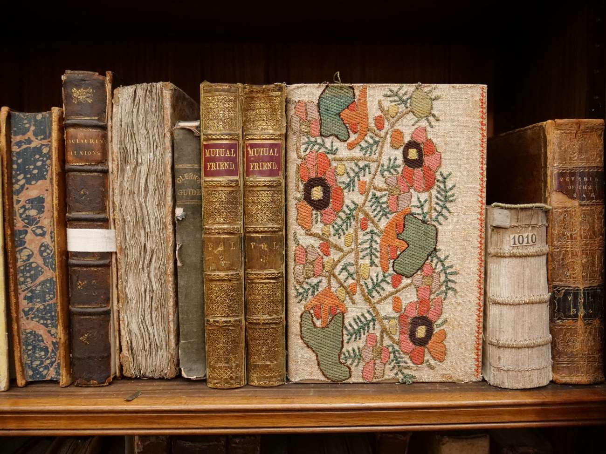
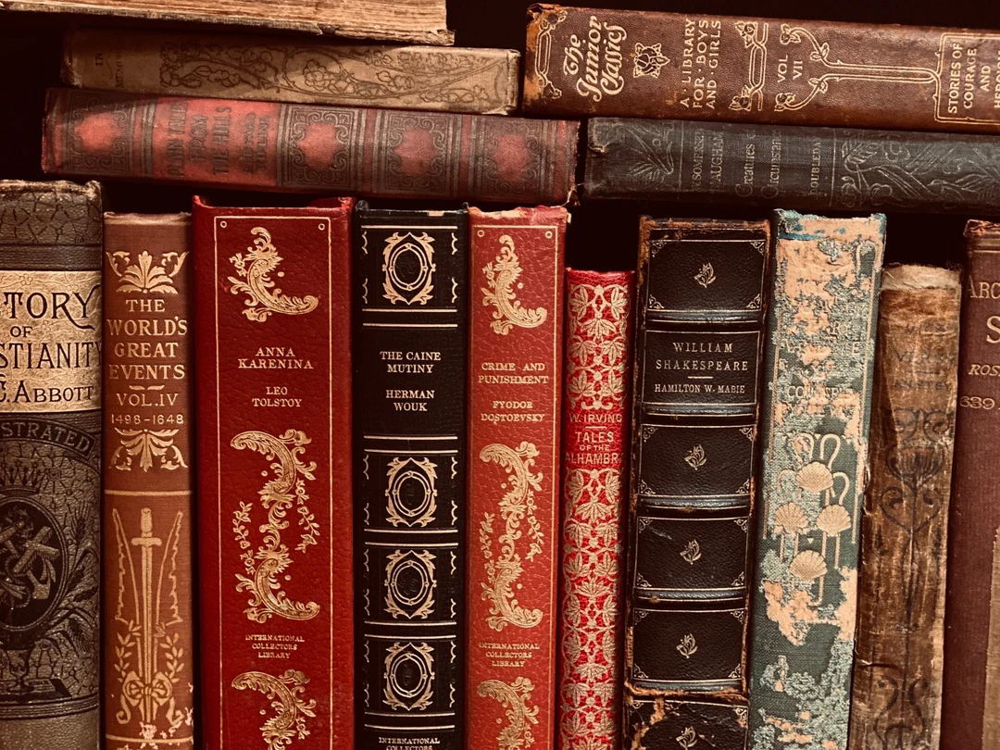

Recenzii de lectură
Cărți care ne-au inspirat, emoționat și provocat. Găsește aici recomandările noastre!
„În căutarea timpului pierdut” – Marcel Proust
O meditație profundă asupra memoriei și timpului.
„Micul Prinț” – Antoine de Saint-Exupéry
O poveste emoționantă despre copilărie și sensul lucrurilor.
„Orlando” – Virginia Woolf
Explorarea identității de gen și natura schimbării.
The Shining
-
În cartea lui Stephen King, Jack Torrance se confruntă cu demonii interiori, iar hotelul devine o extensie a nebuniei și traumei.
-
Filmul lui Kubrick oferă o interpretare vizuală intensă și ambiguă, cu o atmosferă amenințătoare și o abordare artistică unică.
The Godfather

-
Cartea lui Mario Puzo oferă detalii complexe despre familia Corleone și explorează teme de loialitate, putere și tradiție.
-
Filmul lui Coppola se concentrează pe esența poveștii, oferind o interpretare cinematografică iconică și intensă.
Gone Girl
-
Romanul lui Gillian Flynn explorează mintea personajelor prin narațiuni alternative și o analiză psihologică profundă.
-
Filmul păstrează tensiunea, dar pierde din complexitatea gândurilor interioare ale lui Amy, oferind totuși o adaptare reușită.
Cărți care au inspirat ecranizări celebre
- „Fight Club”
- „Jurassic Park”
- „Shutter Island”
- „The Hobbit”
- „Little Women”
- „The Martian”
- Chuck Palahniuk
- Michael Crichton
- Dennis Lehane
- J.R.R. Tolkien
- Louisa May Alcott
- Andy Weir
Citate celebre care ne-au impresionat
-

„Deci, te iubesc pentru că întregul univers a conspirat să mă ajute să te găsesc.”
– The Alchemist
-

„Nu este nimic să mori; este îngrozitor să nu trăiești.”
– Les Misérables
-

„Dacă este adevărat că există la fel de multe minți ca și capete, atunci există la fel de multe tipuri de iubire ca și inimi.”
– Anna Karenina
-
„Visăm în momentele de veghe și mergem în somn.”
– The Scarlet Letter